STM32F103C8T6 · 128×64 OLED · 四个按键。
流动表盘、倒计时、秒表、计算器、两款游戏——每一步都有图。
概览
上电，OLED 里就是这块手表真正在跑的画面（来自固件逐帧回放）。点一点右边的按键试试。
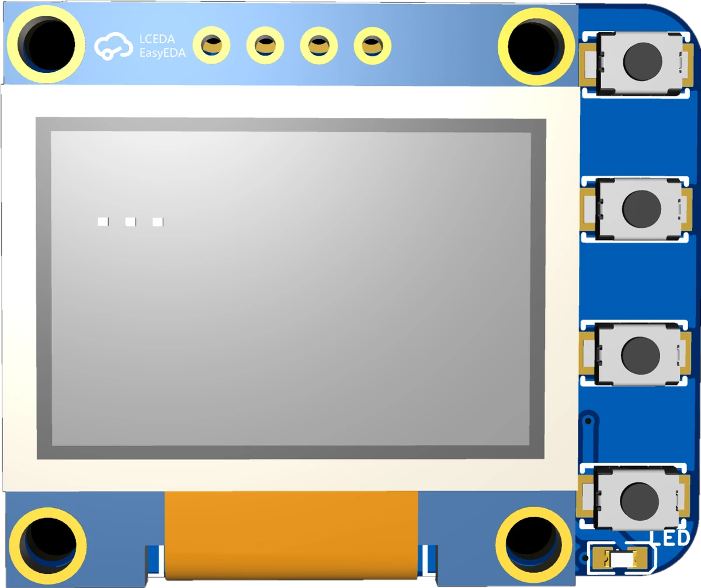
点按键：PA4 黑洞 · PA5 设置 · PA6 计算器与游戏 · PA7 日期与访问
时间界面短按切换表盘与黑洞；所有菜单里用来换选中项。长按 2 秒回到时间界面。
时间界面进入「铃铛 / 秒表」。菜单里确认进入，数值界面加 1。
时间界面进入「计算器 / 游戏」。数值界面减 1。
时间界面进入「齿轮 / 放大镜」。倒计时里它是开始，编辑器里它是保存。
01 · 时间
上电即进入。表盘像流水一样缓缓滑动，一键切换成黑洞形态。
在「流动表盘」与「黑洞时间」之间切换，带 1 秒形态过渡动画。
在任何界面长按 PA4 两秒，都会回到时间界面。
实机回放：表盘 → 黑洞
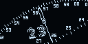
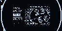
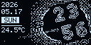
02 · 倒计时
时、分、秒像密码锁一样滚动。时间到，烟花绽放，小猫起舞，蜂鸣器响起，LED 闪烁。
在时间界面短按 PA5，进入设置界面：左铃铛，右秒表。
短按 PA4 切换选中项（被选中的外框闪烁），选中铃铛后短按 PA5 进入倒计时。
PA4 在 时 → 分 → 秒 之间选择；PA5 加 1，PA6 减 1；长按 2 秒快速连加连减，数值到头自动进位、环绕。
按 PA7 立即开始并回到时间界面，LED 常亮。再次进入铃铛，可看到剩余时间、百分比与进度条。
倒计时进行中，长按 PA5 两秒取消。
设定时间
时间到：烟花 + 舞猫
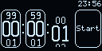
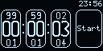
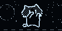
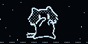
03 · 秒表
毫秒精度的大钟盘。可以无限分圈，保留最近 100 圈。
时间界面 PA5 进入设置，PA4 选中右边的秒表图标，PA5 进入。
按一下开始，再按暂停；暂停后再按，从头开始并清空分圈记录。
每按一次记一圈，短针回到 12 点重新开始扫，一眼看出这一圈跑了多久。
逐圈回看，被翻到的圈号闪烁；3 秒无操作回到最新一圈。
回到时间界面，秒表继续在后台走。
开始 → 分圈 → 分圈
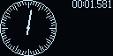
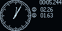
04 · 计算器
四则运算，全程整数内核：0.1 + 0.2 精确等于 0.3。
时间界面短按 PA6：左计算器，右游戏。
PA4 切换选中，PA5 进入。
PA5 向左、PA6 向下（到边界自动绕回），PA7 确认；选中的方框闪烁。
在显示行里前后移动光标，可在中间插入或修改。
左上 AC 无限退回上一步；左下按键清空全部。结果后按任意键开始新计算。
输入 9 → 加 → 1 …
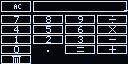
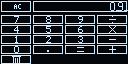
05 · 游戏
方块每落一块就加分，右栏分数实时跳动；跳一跳远近随机，落地有缓冲。结束时烟花为你绽放。
时间界面 PA6 → PA4 选中游戏手柄 → PA5，进入游戏选择：PA4 在「跳一跳」与「俄罗斯方块」间切换，PA5 开始。
PA5 左移，PA6 右移，PA7 旋转，PA4 暂停（任意键继续，3-2-1 倒数后恢复）。每落一块 +10 分，消行额外加成。
按住 PA5 蓄力，松开起跳；平台间距与大小每次随机。落在平台上得 1 分，落空则掉下去，游戏结束。
得分与烟花同屏。PA4 在「房子」「重来」之间切换，PA5 确认。
俄罗斯方块
跳一跳
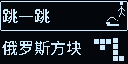
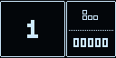
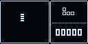
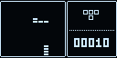
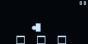
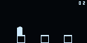
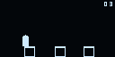
06 · 设置
像翻日历一样翻页。星期由年月日自动推算，永远和日期一致。
时间界面短按 PA7：左齿轮，右放大镜。
PA4 切换，PA5 进入日期时间编辑器。
年 → 月 → 日 → 时 → 分 → 秒 循环；被选中的框闪烁。
PA5 下一页（新数字从下方升起），PA6 上一页；长按自动连翻。月、日越界自动夹取。
回到时间界面，立刻按新时间显示。长按 PA4 两秒则放弃修改。
翻日历式设置
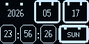
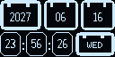
07 · 手册
手表自己带一本说明书。上电，进入访问，用手机扫一扫即可打开这个网页。
时间界面 PA7 → PA4 选中放大镜 → PA5。
屏幕先显示 3 秒「扫一扫查看使用手册」（底部进度条），随后整屏二维码。
回到时间界面。
提示 3 秒，然后二维码
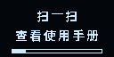
通用规则
PA4 长按 2 秒，在任何界面都会回到时间界面。
返回后 1 秒内 PA4 不响应，避免误触。
硬件
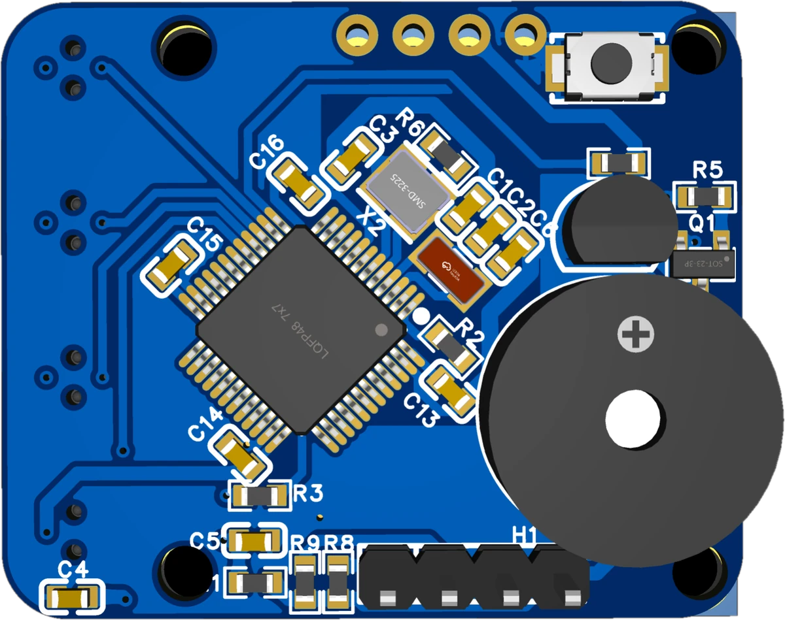
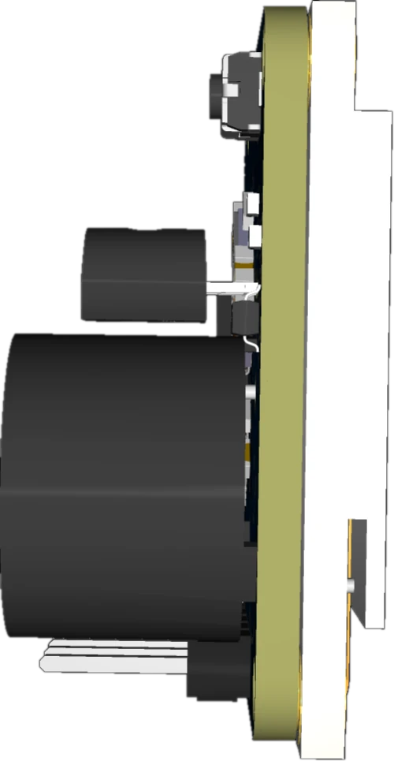
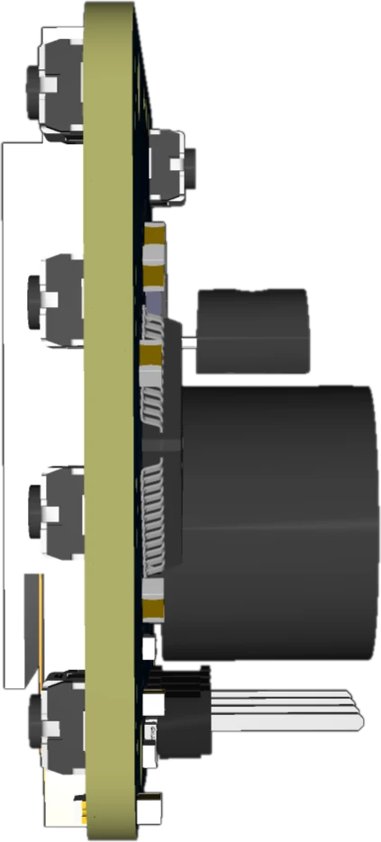